השאלון עוזר לנו להבין איך הילד/ה חווה את KIKO, אילו חלקים עבדו יותר או פחות, ואיך המוצר השתלב במשחק או בפעילות.
כמה פרטים קצרים על הילד/ה יעזרו לנו להבין את החוויה בהקשר הנכון.
המטרה היא להבין איך הילד/ה ניגש/ת לסביבה ולמשחק חדש, כדי לפרש את המפגש עם KIKO בהקשר הנכון.
ההפרדה בין מיקום, סוג הפעילות ואופן תחילת האינטראקציה תעזור לנו להבין טוב יותר את ההקשר שבו KIKO פגש את הילד/ה.
בחרו את כל החלקים שהילד/ה באמת נחשף/ה אליהם במפגש.
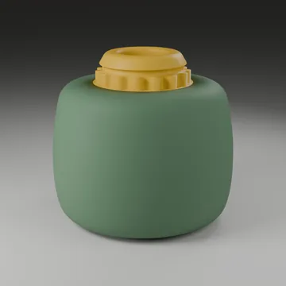
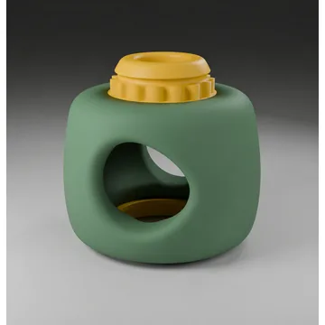
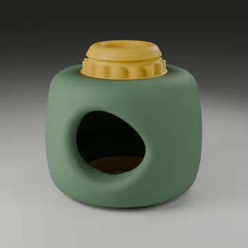
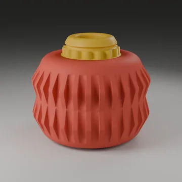
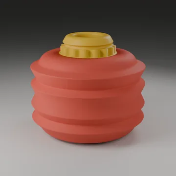
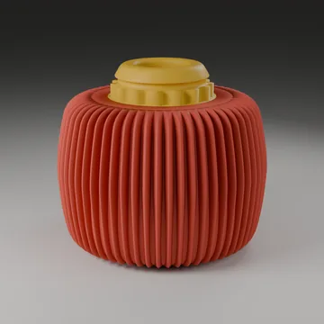
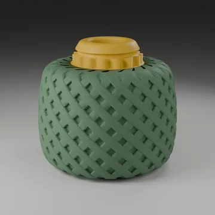
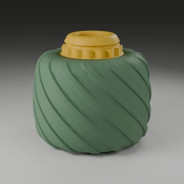
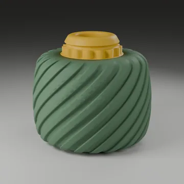
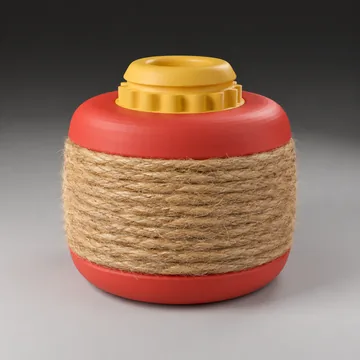
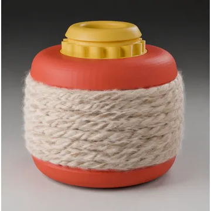
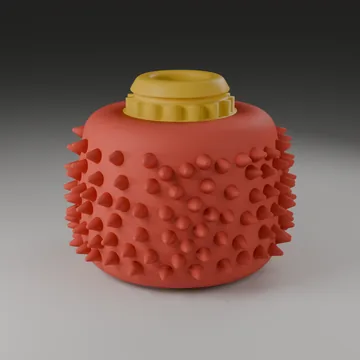
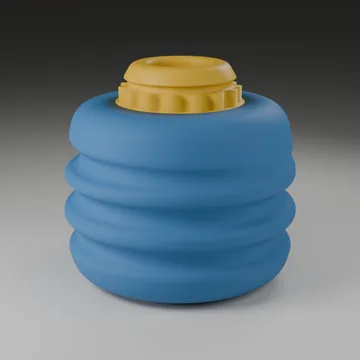
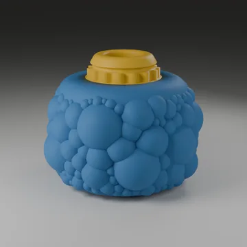
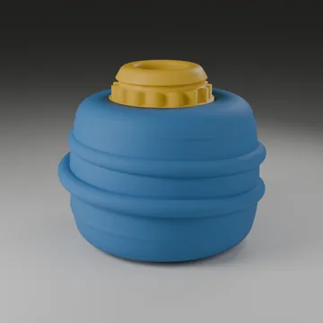
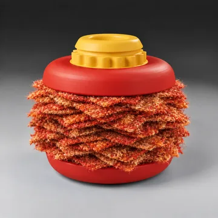
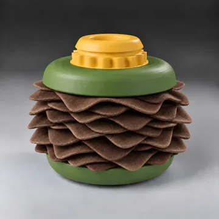
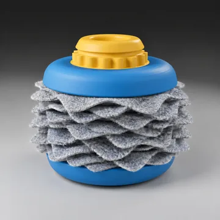
בחרו את החלק שנראה מתאים במיוחד לילד/ה במפגש הזה.
זה לא אומר שהחלק “לא טוב” — רק שהיום הוא פחות התאים לילד/ה או לסיטואציה.
אפשר לבחור כמה. כאן אנחנו מתמקדים במה שנצפה בפועל.
כאן אנחנו בודקים עד כמה העניין במוצר המשיך גם לאחר ההיכרות הראשונית.
השאלה הזו אופציונלית. אפשר לבחור כמה, או פשוט להמשיך.
עוד כמה שאלות קצרות שיעזרו לנו להבין מה עבד ומה כדאי לפתח בהמשך.
אפשר לבחור כמה כיוונים. חשבו על מרקם, תחושה, תנועה או סוג אינטראקציה שחסר לכם היום.
המשוב שלכם עוזר לנו להמשיך לפתח ולשפר את KIKO 🧡